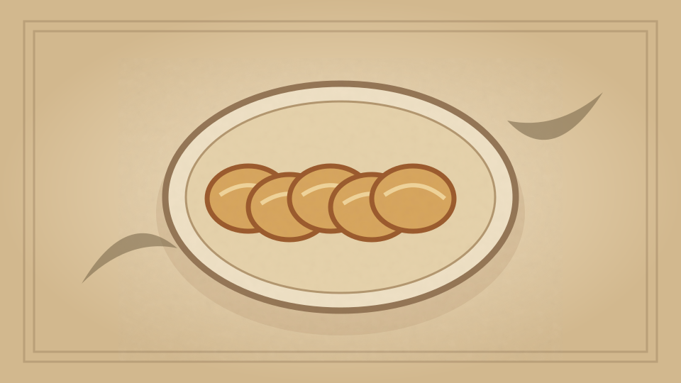

1910 · Fannie Merritt Farmer · BISCUITS, BREAKFAST CAKES, AND SHORTCAKES
Entire Wheat Griddle-cakes
The Boston Cooking-School Cook Book
❧ ───── ❦ ───── ❧

Historical Recipe
The following text is extracted from the 1910 edition, retaining historical terminology and quantities.
Original Ingredients & Directions
½ cup entire wheat flour
1 cup flour
3 teaspoons baking powder
½ teaspoon salt
3 tablespoons sugar
1 egg
1¼ cups milk
1 tablespoon melted butter
Prepare and cook same as Sweet Milk Griddle-cakes.
Automatically extracted transcription; editorial verification pending. Historical instructions may not meet modern food-safety standards.